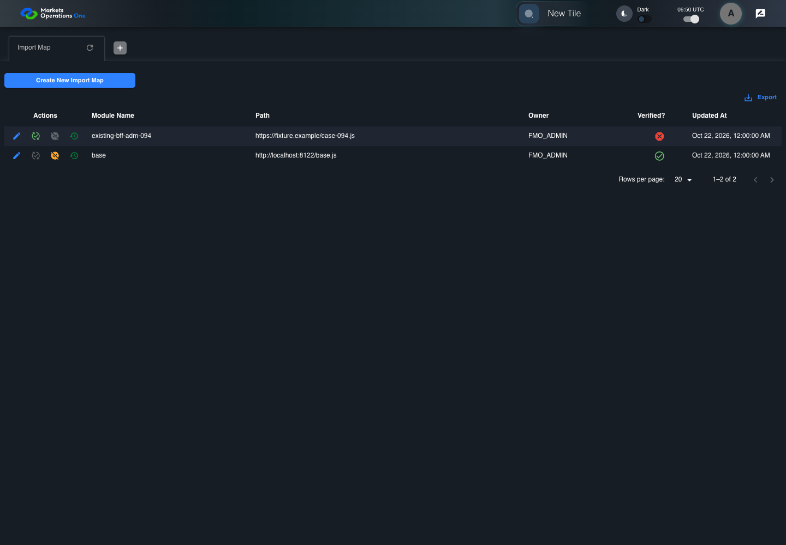
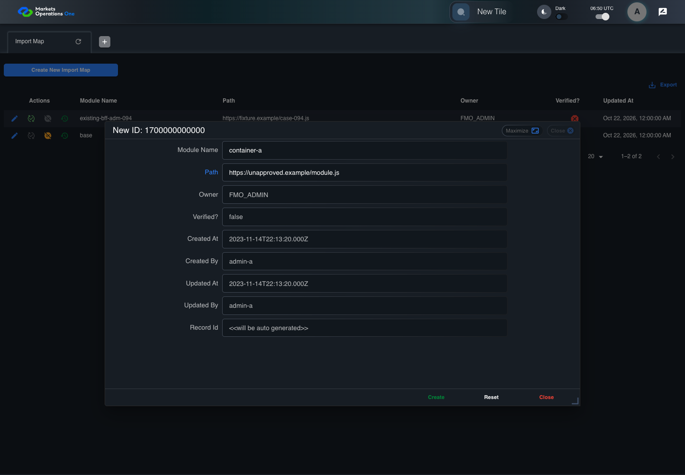
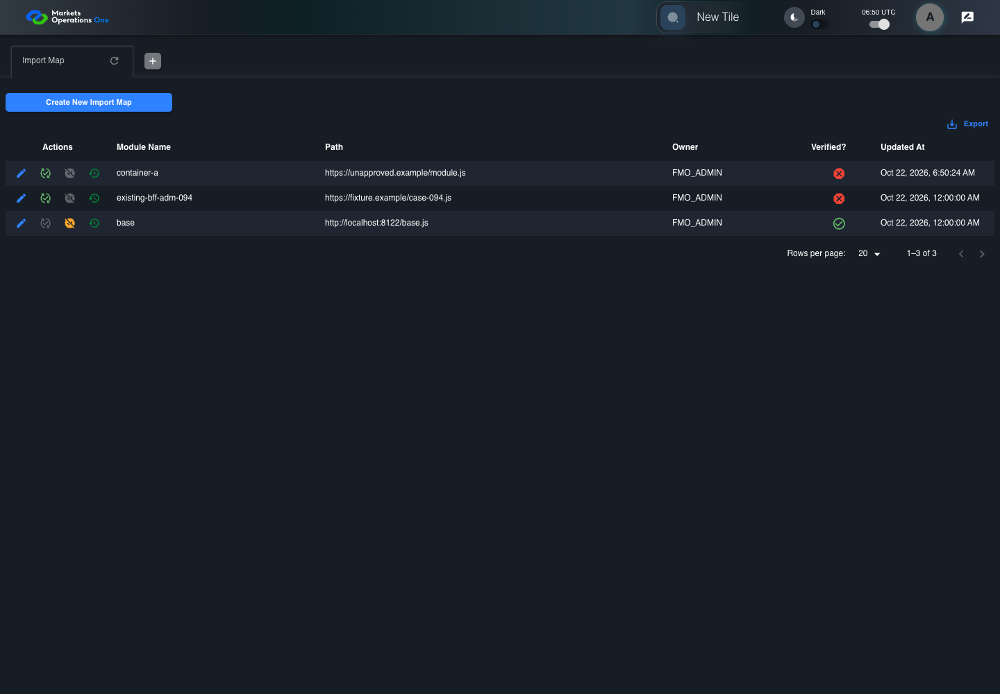

BFF-ADM-094 current BFF administration through actual UI
FAIL · application/run-072/bff-adm-094-current-bff-administration-through-actual-ui-0dbe3f07239c-attempt-1 · ACTUAL_APPLICATION_LOCAL_SERVICES
Actual current React and exact-current BFF admin controllers/services/JPA with actual migration DDL in disposable PostgreSQL. Controlled OUD/EMS2 identities and local Spring bootstrap. Fixture SQL seeds/mutates isolated records; service errors are actual database errors. Undefined agreed messages remain unresolved acceptance.
2026-10-22T06:50:19.303Z to 2026-10-22T06:50:30.848Z
Assertions and result · Artifact manifest · Exact run inputs and source hashes
Result SHA-256:0dd58f235fff6aee78bd27a71b2529d471d7acca10ddff78fd96fe0a1fed9289Retained failure details
[
{
"message": "Error: \u001b[2mexpect(\u001b[22m\u001b[31mlocator\u001b[39m\u001b[2m).\u001b[22mtoBeVisible\u001b[2m(\u001b[22m\u001b[2m)\u001b[22m failed\n\nLocator: locator('[role=\"tabpanel\"]:visible').locator('[role=\"dialog\"]').filter({ has: getByText(/^(?:new|edit|verify|deactivate) ID:/) })\nExpected: visible\nTimeout: 5000ms\nError: element(s) not found\n\nCall log:\n\u001b[2m - Expect \"toBeVisible\" locator('[role=\"tabpanel\"]:visible').locator('[role=\"dialog\"]').filter({ has: getByText(/^(?:new|edit|verify|deactivate) ID:/) }) with timeout 5000ms\u001b[22m\n\u001b[2m - waiting for locator('[role=\"tabpanel\"]:visible').locator('[role=\"dialog\"]').filter({ has: getByText(/^(?:new|edit|verify|deactivate) ID:/) })\u001b[22m\n",
"stack": "Error: \u001b[2mexpect(\u001b[22m\u001b[31mlocator\u001b[39m\u001b[2m).\u001b[22mtoBeVisible\u001b[2m(\u001b[22m\u001b[2m)\u001b[22m failed\n\nLocator: locator('[role=\"tabpanel\"]:visible').locator('[role=\"dialog\"]').filter({ has: getByText(/^(?:new|edit|verify|deactivate) ID:/) })\nExpected: visible\nTimeout: 5000ms\nError: element(s) not found\n\nCall log:\n\u001b[2m - Expect \"toBeVisible\" locator('[role=\"tabpanel\"]:visible').locator('[role=\"dialog\"]').filter({ has: getByText(/^(?:new|edit|verify|deactivate) ID:/) }) with timeout 5000ms\u001b[22m\n\u001b[2m - waiting for locator('[role=\"tabpanel\"]:visible').locator('[role=\"dialog\"]').filter({ has: getByText(/^(?:new|edit|verify|deactivate) ID:/) })\u001b[22m\n\n at /Users/lushevol/code/github/ratan-release-impact/workbench/e2e/audit-specs/bff-admin.spec.ts:43:117\n at AuditCapture.step (/Users/lushevol/code/github/ratan-release-impact/workbench/e2e/support/audit-fixture.ts:94:21)\n at /Users/lushevol/code/github/ratan-release-impact/workbench/e2e/audit-specs/bff-admin.spec.ts:18:27",
"location": {
"file": "/Users/lushevol/code/github/ratan-release-impact/workbench/e2e/audit-specs/bff-admin.spec.ts",
"column": 117,
"line": 43
},
"snippet": " 41 | if(text.startsWith('the next BFF repository save')){await app.fixture('seed',{failure:`${app.resource}-save`});return;}\n 42 | if((match=/^Admin [ABCS] clicks the button labeled \"([^\"]+)\"/.exec(text))){if(match[1].startsWith('Create New')){const nativeNow=Date.now();if(creationClock)await page.clock.setFixedTime(new Date(1700000000000));await app.ui.panel.getByRole('button',{name:match[1],exact:true}).click();if(creationClock)await page.clock.setFixedTime(new Date(nativeNow));}else {const row= /row with \"Record Id\" \"(\\d+)\"/.exec(text)?.[1];if(row){await app.ui.reveal('actions',row);await app.ui.action(match[1],row).click();}else await app.clickFooter(match[1]);}return;}\n> 43 | if((match=/^the dialog titled \"([^\"]+)\" (is visible|remains visible)/.exec(text))){await expect(app.ui.dialog()).toBeVisible();await expect(app.ui.dialog()).toContainText(match[1]);return;}\n | ^\n 44 | if((match=/^Admin [ABCS] fills the (?:textbox|textarea) labeled \"([^\"]+)\" with exactly (\\d+) ASCII \"a\" characters/.exec(text))){await app.fill(match[1],'a'.repeat(Number(match[2])));return;}\n 45 | if((match=/^Admin [ABCS] fills the (?:textbox|textarea) labeled \"([^\"]+)\" with \"(.*)\" in dialog/.exec(text))){await app.fill(match[1],match[2].replaceAll('\\\\\"','\"').replaceAll('\\\\t','\\t'));return;}\n 46 | if((match=/^Admin [ABCS] clicks the combobox labeled \"([^\"]+)\"/.exec(text))){await app.ui.field(match[1],'combobox').click();return;}"
}
]Machine observations
- actual-identity-projection.json
41099b8ce225dad54cab1e5e1a614cf7c86d7a0869ae385269d74a68cd618295 - baseline-inputs.json
a428dbfc8414c39cf6e495526b2a18f915d3b000fe96881d3653c93a440874d2 - bff-boundary.json
88d0ba4e04e1f664d28fec41d7d5d5452d66b5ad473de472649478d946d7f1b3 - committed-ui-submission-comparisons.json
6ee060f2b91a9cd71eb41a91aed76e1fef8dd5e50fe1c06ef956e6c21a99c829 - creation-clock.json
2e51cf8ab87225cb952cd2b32dc4294e6ac4eb5dbd7904f63410932edb5f7a18 - fixture-step-4.json
7bea60e7735329f2035f81b9880c6721e2e6a0e764420ddea74f2c3bc068d6b1 - fixture-step-5.json
122d76a70ececb9245f362a7775e5ee1134d3c43de271ff0d406a97a1bf12ec5 - initial-persisted-records.json
2913bf5e8a29bd31bf83420247e50ec10536e27ff800f585bfe6a5640099f1b2 - persisted-after-submit.json
47c107e43bb82641da5ff72195020bba4707c0987a510ff63edad8ebbf645d54 - ui-origin-bff-requests.json
256282cab2a41ef62529c9d47ec74baa4fab8d224af12bfacc5f92316140358a
Screenshot capture: CAPTURED. Named frames: 12.
Step screenshot bindings: INCOMPLETE. 11/13 canonical steps have execution screenshots.
Bindings measure structural coverage only. They do not establish screenshot content quality or relevance.
Screenshot content review: NOT_REVIEWED. Recorded context: 0/12 frames. Identical image bytes: 6 repeated frames. Recorded context does not establish human visual review.
Step 12 has no screenshot from an executed step. Step 13 has no screenshot from an executed step.
Canonical step timeline
Given Admin A uses subject "admin-a" with role "FMO_ADMIN" in an isolated authenticated browser
Execution: PASSED.
1. step-01 Visible state after step 1: Given Admin A uses subject "admin-a" with role "FMO_ADMIN" in an isolated authenticated browser
2026-10-22T06:50:21.508Z · 1440×1000
Step: /Users/lushevol/code/github/ratan-release-impact/workbench/tasks/ui-test-coverage-20261022/test-cases.md:18685
SHA-256:1ef67be4d51970e2584bea74e057e535f9af5625230cd2eca7579eb1ec765d9fAnd the controlled Import Map fixture records the initial grid rows and persisted values
Execution: PASSED.
2. step-02 Visible state after step 2: And the controlled Import Map fixture records the initial grid rows and persisted values
2026-10-22T06:50:21.686Z · 1440×1000
Step: /Users/lushevol/code/github/ratan-release-impact/workbench/tasks/ui-test-coverage-20261022/test-cases.md:18686
SHA-256:1ef67be4d51970e2584bea74e057e535f9af5625230cd2eca7579eb1ec765d9fImage bytes match frame 1. An unchanged image can be valid for consecutive assertions. This match does not establish correct step content.
And the controlled creation clock returns 1700000000000 milliseconds
Execution: PASSED.
3. step-03 Visible state after step 3: And the controlled creation clock returns 1700000000000 milliseconds
2026-10-22T06:50:21.772Z · 1440×1000
Step: /Users/lushevol/code/github/ratan-release-impact/workbench/tasks/ui-test-coverage-20261022/test-cases.md:18687
SHA-256:1ef67be4d51970e2584bea74e057e535f9af5625230cd2eca7579eb1ec765d9fImage bytes match frame 2. An unchanged image can be valid for consecutive assertions. This match does not establish correct step content.
And the baseline fixture data defines "Module Name" as "container-094"
Execution: PASSED.
4. step-04 Visible state after step 4: And the baseline fixture data defines "Module Name" as "container-094"
2026-10-22T06:50:21.869Z · 1440×1000
Step: /Users/lushevol/code/github/ratan-release-impact/workbench/tasks/ui-test-coverage-20261022/test-cases.md:18688
SHA-256:1ef67be4d51970e2584bea74e057e535f9af5625230cd2eca7579eb1ec765d9fImage bytes match frame 3. An unchanged image can be valid for consecutive assertions. This match does not establish correct step content.
And the baseline fixture data defines "Path" as "https://fixture.example/case-094.js"
Execution: PASSED.
5. step-05 Visible state after step 5: And the baseline fixture data defines "Path" as "https://fixture.example/case-094.js"
2026-10-22T06:50:21.948Z · 1440×1000
Step: /Users/lushevol/code/github/ratan-release-impact/workbench/tasks/ui-test-coverage-20261022/test-cases.md:18689
SHA-256:1ef67be4d51970e2584bea74e057e535f9af5625230cd2eca7579eb1ec765d9fImage bytes match frame 4. An unchanged image can be valid for consecutive assertions. This match does not establish correct step content.
When Admin A clicks the button labeled "Create New Import Map" on the Import Map administration page
Execution: PASSED.6. step-06 Visible state after step 6: When Admin A clicks the button labeled "Create New Import Map" on the Import Map administration page
2026-10-22T06:50:22.241Z · 1440×1000
Step: /Users/lushevol/code/github/ratan-release-impact/workbench/tasks/ui-test-coverage-20261022/test-cases.md:18690
SHA-256:cfdf33e7bfe5771959bda17bbad61b86ea7552c283aad8138ef4c93a2b27f6b0Then the dialog titled "new ID: 1700000000000" is visible on the Import Map administration page
Execution: PASSED.7. step-07 Visible state after step 7: Then the dialog titled "new ID: 1700000000000" is visible on the Import Map administration page
2026-10-22T06:50:22.601Z · 1440×1000
Step: /Users/lushevol/code/github/ratan-release-impact/workbench/tasks/ui-test-coverage-20261022/test-cases.md:18691
SHA-256:c8c942102dd11c91b437f23adf7bba95be67b6dd947ec62631d2bb0e2574bff0When Admin A fills the textbox labeled "Module Name" with "container-a" in dialog "new ID: 1700000000000"
Execution: PASSED.8. step-08 Visible state after step 8: When Admin A fills the textbox labeled "Module Name" with "container-a" in dialog "new ID: 1700000000000"
2026-10-22T06:50:23.277Z · 1440×1000
Step: /Users/lushevol/code/github/ratan-release-impact/workbench/tasks/ui-test-coverage-20261022/test-cases.md:18692
SHA-256:dc5010a6457a42de2616b6228b8b22d80bbeb3545f9c7e028e27ecf21529503cAnd Admin A fills the textbox labeled "Path" with "https://unapproved.example/module.js" in dialog "new ID: 1700000000000"
Execution: PASSED.
9. step-09 Visible state after step 9: And Admin A fills the textbox labeled "Path" with "https://unapproved.example/module.js" in dialog "new ID: 1700000000000"
2026-10-22T06:50:23.779Z · 1440×1000
Step: /Users/lushevol/code/github/ratan-release-impact/workbench/tasks/ui-test-coverage-20261022/test-cases.md:18693
SHA-256:4bc8e243d9b53cbaf50b6df59806dfb19808b3969169ac97e6d1e535035d102fAnd Admin A clicks the button labeled "Create" in dialog "new ID: 1700000000000"
Execution: PASSED.
10. step-10 Visible state after step 10: And Admin A clicks the button labeled "Create" in dialog "new ID: 1700000000000"
2026-10-22T06:50:24.306Z · 1440×1000
Step: /Users/lushevol/code/github/ratan-release-impact/workbench/tasks/ui-test-coverage-20261022/test-cases.md:18694
SHA-256:8b6924e91ac5bf459973ce557ac1d4b201c494f8dbedddd019ad2454a5583a80Then the dialog titled "new ID: 1700000000000" remains visible on the Import Map administration page
Execution: FAILED.
11. step-11-failure Visible state when step 11 failed. Later steps did not execute.
2026-10-22T06:50:29.640Z · 1440×1000
Step: /Users/lushevol/code/github/ratan-release-impact/workbench/tasks/ui-test-coverage-20261022/test-cases.md:18695
SHA-256:8b6924e91ac5bf459973ce557ac1d4b201c494f8dbedddd019ad2454a5583a80Image bytes match frame 10. An unchanged image can be valid for consecutive assertions. This match does not establish correct step content.
And the alert with severity "error" in the portal snackbar displays the agreed message for a Path validation error
Execution: NOT_EXECUTED.No screenshot is recorded for this step. No executed state is claimed.
And the active-import-map response excludes the submitted unsafe Path
Execution: NOT_EXECUTED.No screenshot is recorded for this step. No executed state is claimed.
Additional named frames

The visible state when the test failed.
2026-10-22T06:50:29.936Z · 1440×1000Step: Test source: /Users/lushevol/code/github/ratan-release-impact/workbench/e2e/audit-specs/bff-admin.spec.ts:11
SHA-256:
8b6924e91ac5bf459973ce557ac1d4b201c494f8dbedddd019ad2454a5583a80Image bytes match frame 11. An unchanged image can be valid for consecutive assertions. This match does not establish correct step content.
Screenshots establish visible state only. Assertions and traces support functional claims.